-
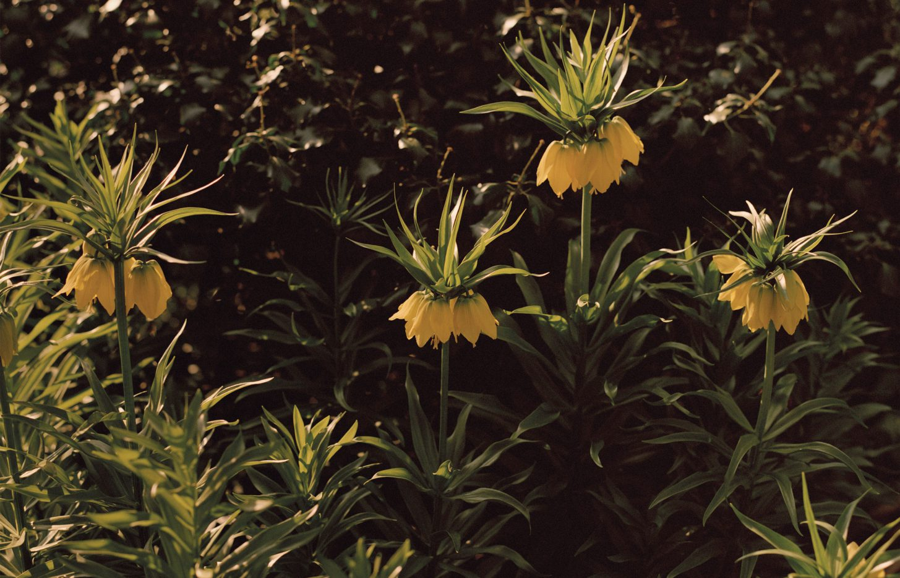
england oxford The Physic Garden
A unique sanctuary established in 1621, Oxford Botanic Garden has remained a source of botanical inspiration.
-
chile Patagonia
Patagonia occupies the tip of the Americas, separated from the Pampas to the north by the Huincul Fault, washed to the east by the Atlantic, and to the west by the Humboldt Current.
-
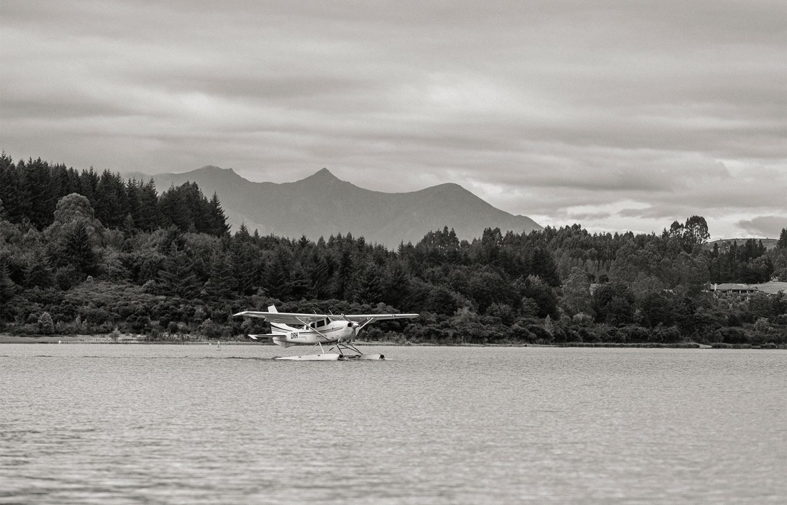
Kepler Track
Traversing the wild and ever-changing landscapes of New Zealand's South Island.
-
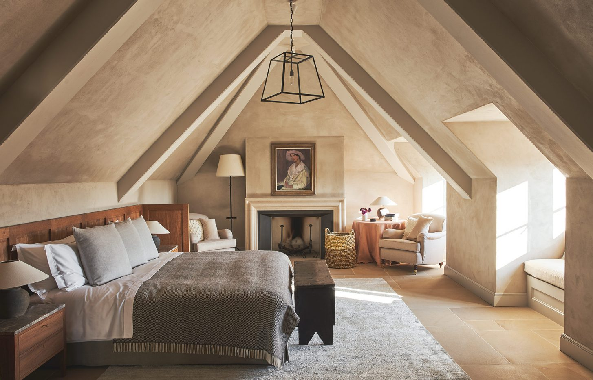
united Kingdom Heckfield Place
A Georgian manor set in the woodlands of Hampshire, renovated into a heritage hotel, and surrounded by a vast arboretum planted by Victorian horticulturalist William Wildsmith.
-
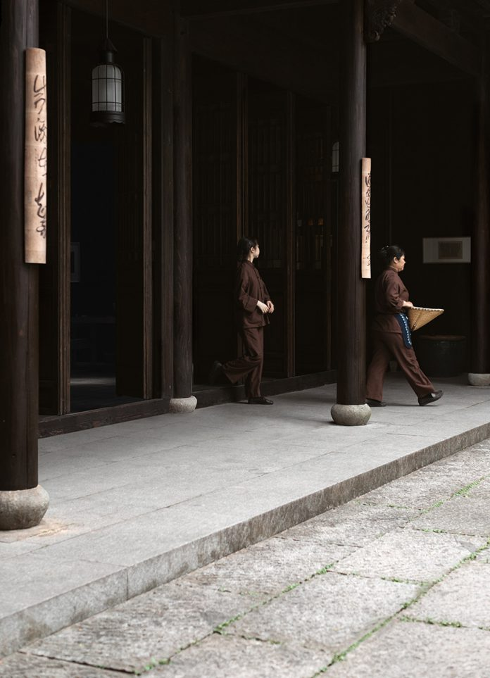
china Grey Dawn
At Amanfayun, a former fishing village in West Lake, China.
-
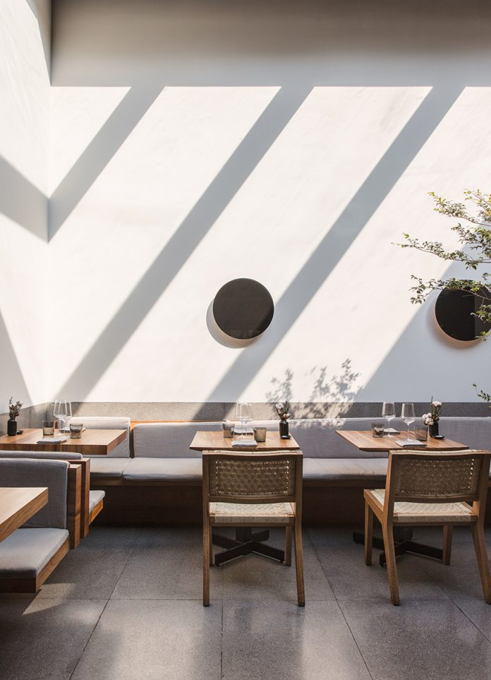
mexico mexico city Modern Mexican
With Enrique Olvera of Mexico City's Pujol.
-
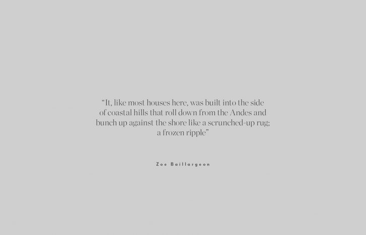
Life in Valparaiso
The winning entry for the travel writing competition, Chatwin Project, hosted by Cereal, in partnership with Vintage and Moleskine.
-
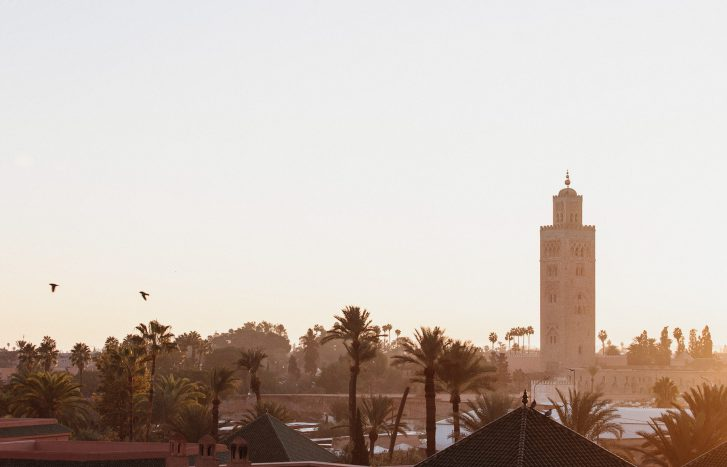
morocco marrakech Quietude in Marrakech
A stay among the courtyards and riads of Royal Mansour, Marrakech.
-
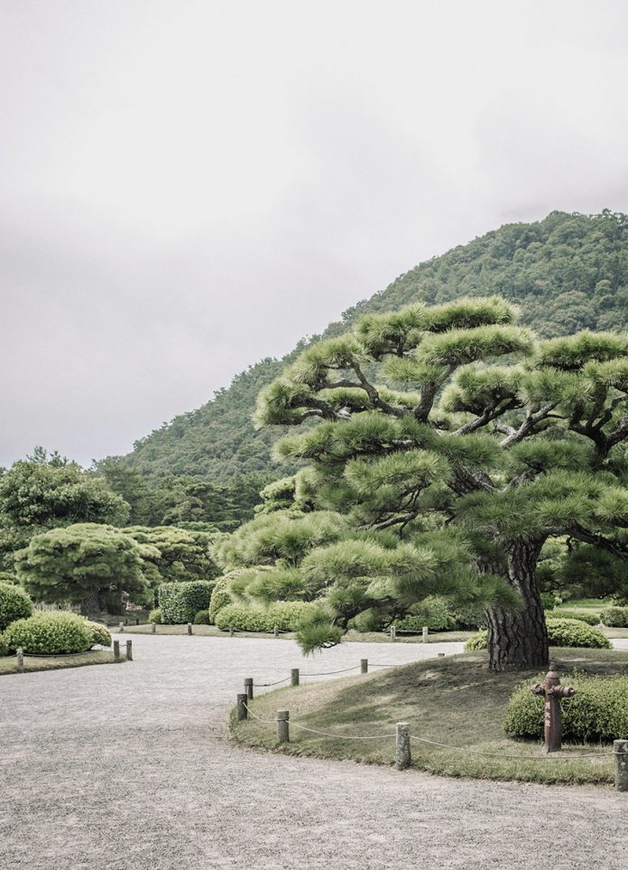
japan Amidst the Pines
A visit to the Edo period Ritsurin Garden and Kikugetsu-tei teahouse, near Takamatsu, Japan.
-
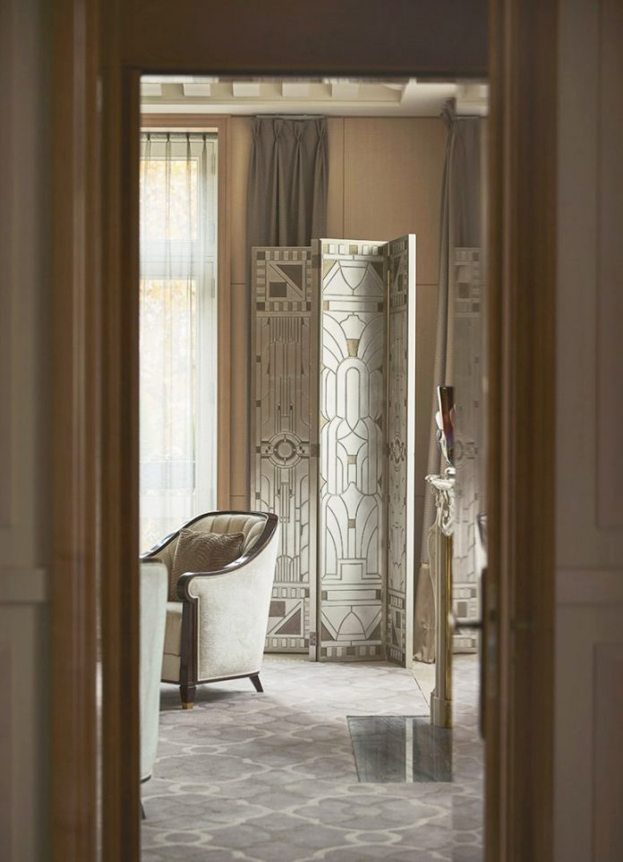
france paris Parisian Glamour
A stay at the Peninsula Paris, the grand 200-room Haussmannian hotel in the city's 16th arrondissement.
-
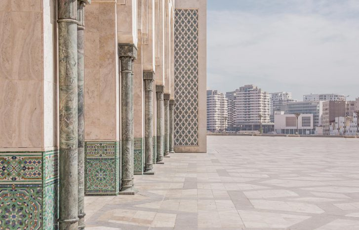
morocco Casablanca
Exploring the romance and intrigue of the Moroccan city's architecture.
-
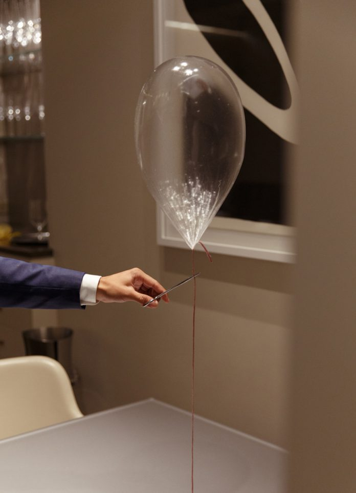
usa chicago Grant Achatz
On the fusion of art and food, at Alinea, Chicago.
-
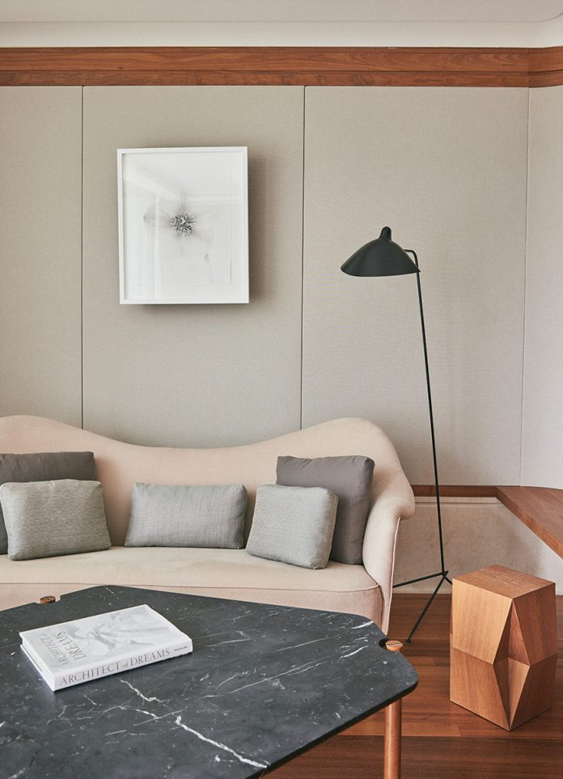
england london Quiet Colour
An exploration of the modernist rooms at The Berkeley in Knightsbridge, designed by architect John Heah.
-
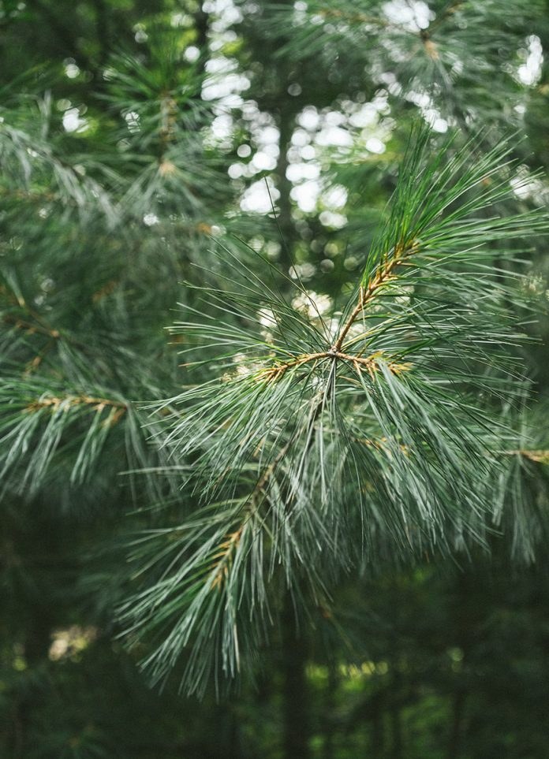
usa Blackberry Farm
A bucolic escape to the 4,200 acre estate, set in the Great Smoky Mountains of East Tennessee.
-
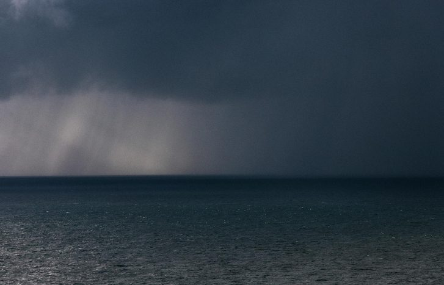
scotland shetland From the North Sea to Shetland
An oil story.
-
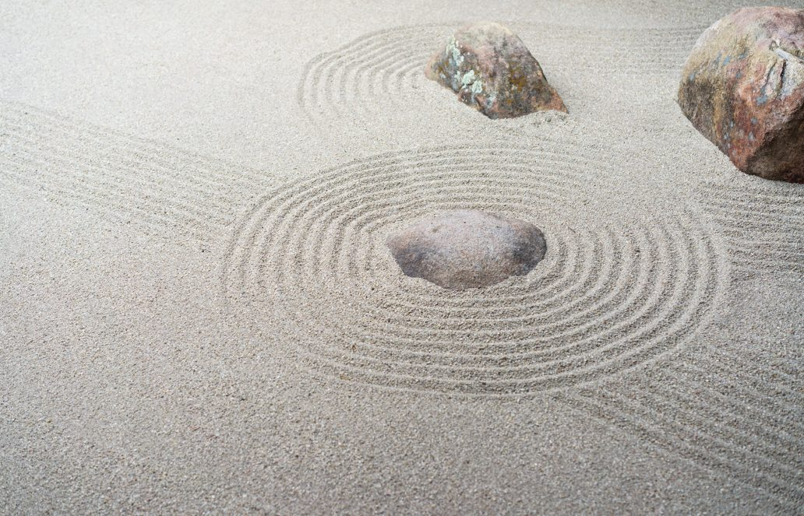
usa Golden Door
A stay among the comforting silence of the Japanese ryokan-style health and wellness retreat.
-
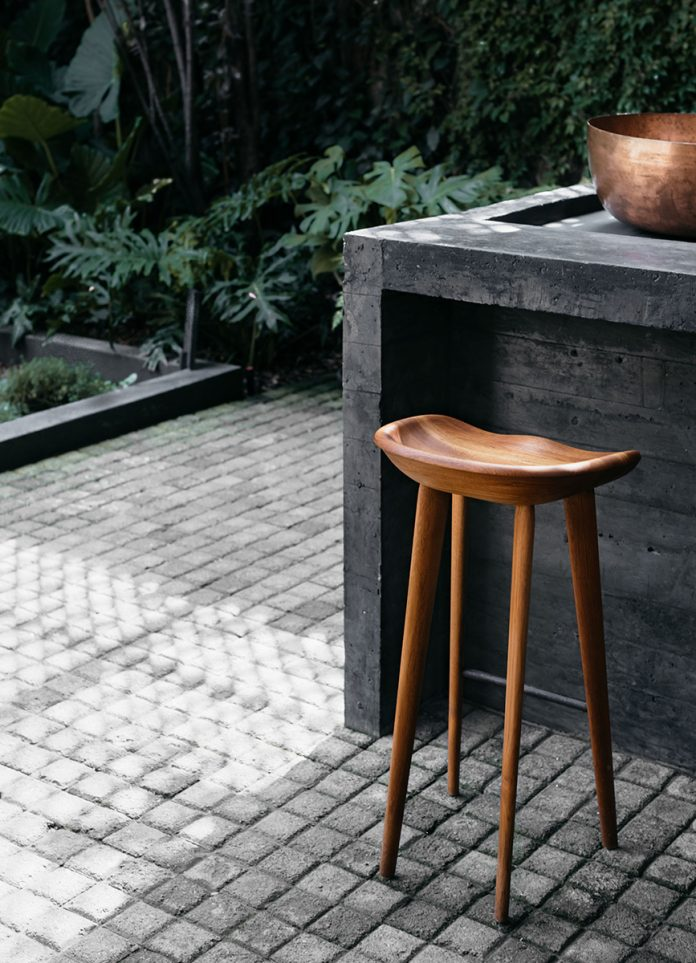
mexico mexico city Pujol
Exploring the modern Mexican restaurant in Mexico City.
-
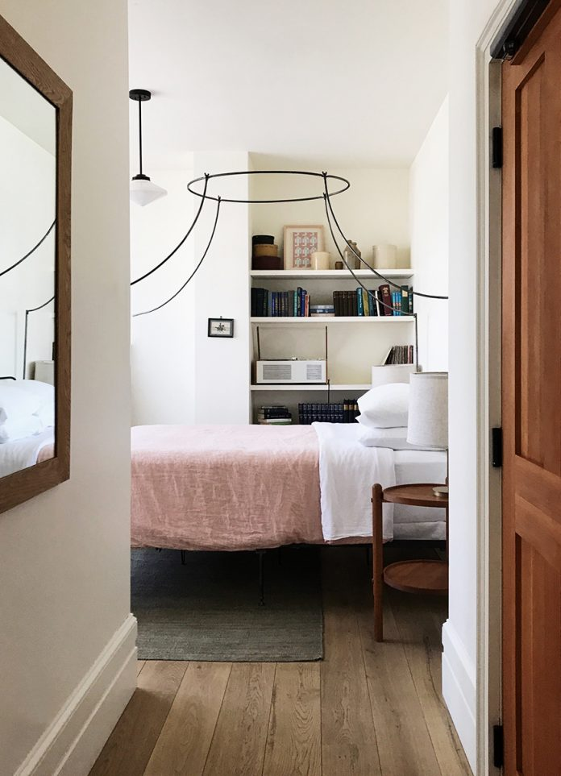
usa hudson Rivertown Lodge
A vintage-modern oasis in the Hudson Valley, NY, housed in a former 1920s cinema.
-
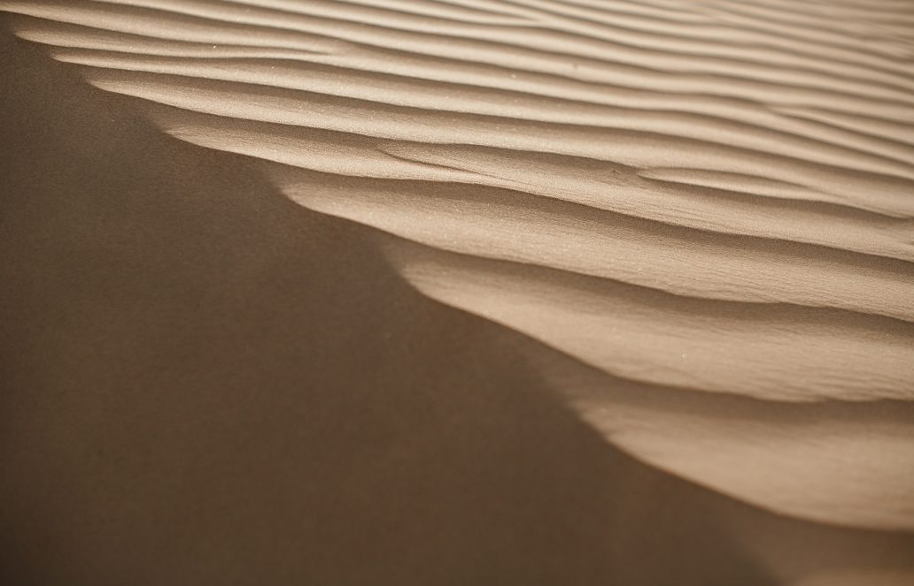
dubai Sand and City
A photo essay exploring the desert palette of Dubai.